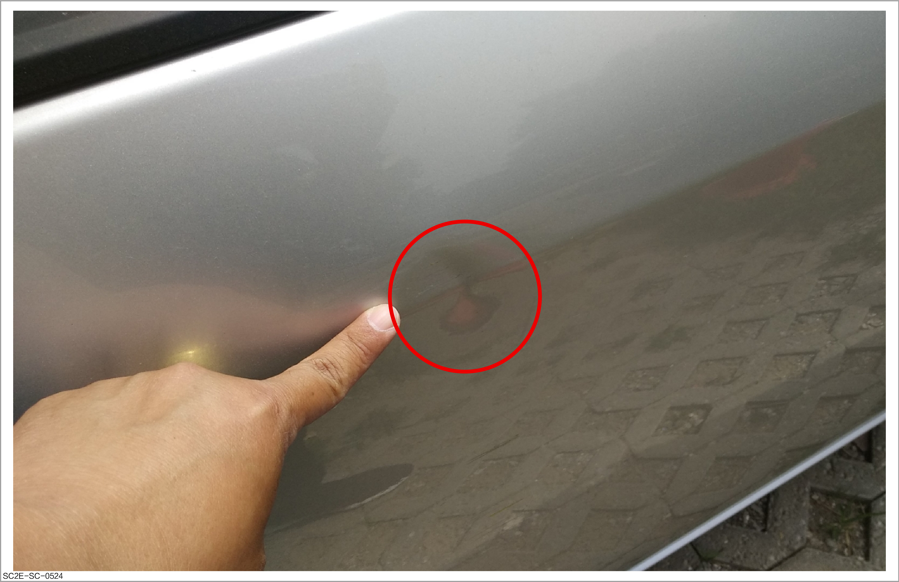
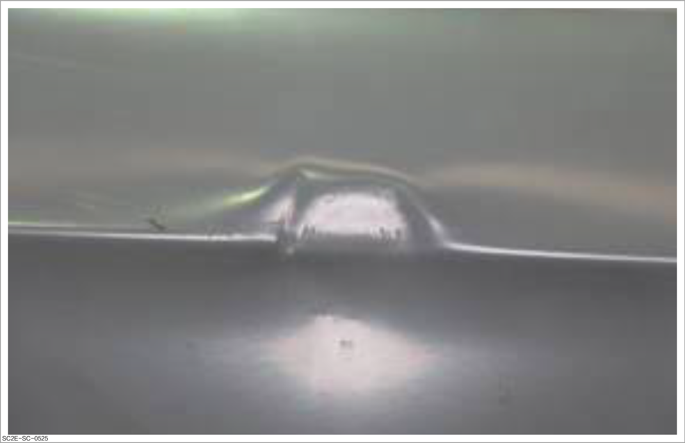
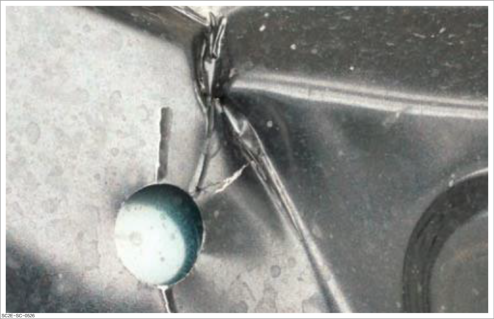
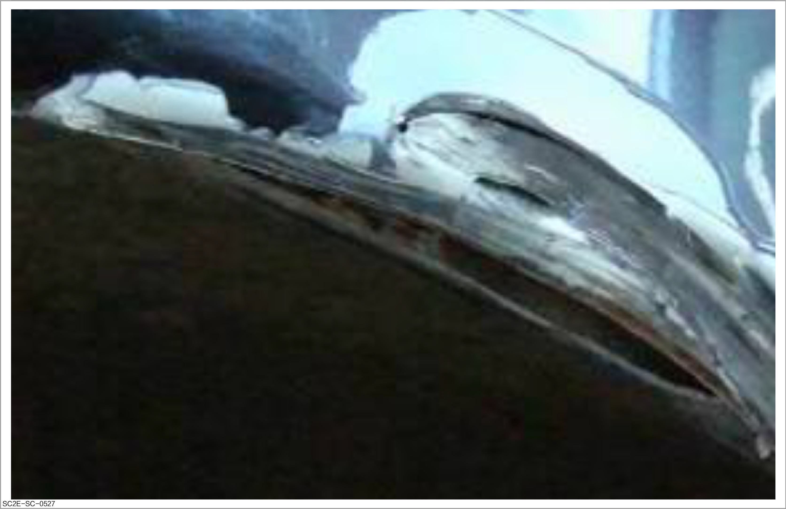

Damage type of outer panel
This document describes the damage type of the outer panel. If you need to learn how to repair the outer panel, refer to How to repair the outer panel
Elastic deformation
Elastic deformation refers to the deformation in which case the original shape can be restored when the external force is removed. In sheet metal repair, the dented area with elastic deformation shall be repaired first on the basis of the elastic deformation principle, and the panels with large deformation shall be repaired from outside to inside.

Elastic deformation exists in most deformed panels and can be repaired first.
-
Characteristic: The original shape can be restored after the external force is removed.
-
Deformation cause: The applied external force does not exceed the elastic limit of the panel.

Plastic deformation
Plastic deformation refers to the deformation in which case the original shape cannot be restored when the external force is removed. Compared with elastic deformation, plastic deformation is more difficult to repair and exhibits greater complexity in types.
Type I: ordinary plastic deformation
-
Characteristic: The original shape cannot be restored after the external force is removed.
-
Deformation cause: The applied external force exceeds the elastic limit of the panel.
-
Repair steps:
-
Grind the paint film in the repaired area before using the meson machine.
-
Use a crowbar or perform multi-point welding to repair more seriously damaged parts first.
-
Carry out fine repair and shrinking on the deformed surface.

-
Type II: crumple & folding
-
Deformation cause:
-
It is a phenomenon of inward shrinkage of the panel after impact, which generally occurs in case of large-area deformation.
-
In case of excessive shrinking, panel crumple and deformation will also occur.
-
-
Repair method: Use the bucking block and the sheet metal hammer for extension to repair the crumples.

Type III: other plastic deformation
-
Characteristic:
-
Warping
-
Bending
-
Stretching
-
Rupture or perforation
-
-
Repair method:
-
Use the bucking block and the sheet metal hammer for extension to repair the crumples.
-
Weld the torn or perforated area before drawing with a meson machine.

-